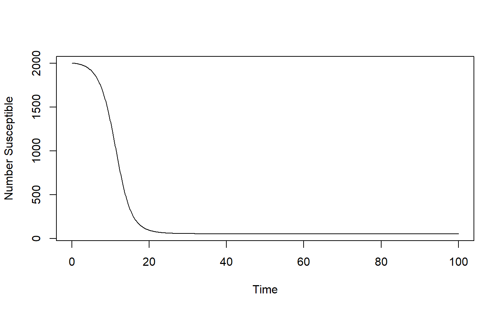

R/simulate_idpatterns_ode.R
simulate_idpatterns_ode.RdSimulation of a compartmental model with several different compartments: Susceptibles (S), Infected and Pre-symptomatic (P), Infected and Asymptomatic (A), Infected and Symptomatic (I), Recovered and Immune (R) and Dead (D).
This model includes natural births and deaths and waning immunity. It also allows for seasonal variation in transmission. The model is assumed to run in units of months. This assumption is hard-coded into the sinusoidally varying transmission coefficient, which is assumed to have a period of a year.
simulate_idpatterns_ode(
S = 1000,
P = 1,
bP = 0,
bA = 0,
bI = 0.002,
s = 0,
gP = 1,
gA = 1,
gI = 1,
f = 0,
d = 0,
w = 0,
n = 0,
m = 0,
timeunit = 1,
tmax = 300
): initial number of susceptible hosts : numeric
: initial number of infected, pre-symptomatic hosts : numeric
: level/rate of infectiousness for hosts in the P compartment : numeric
: level/rate of infectiousness for hosts in the A compartment : numeric
: level/rate of infectiousness for hosts in the I compartment : numeric
: strength of seasonal/annual sigmoidal variation of transmission rate : numeric
: rate at which a person leaves the P compartment : numeric
: rate at which a person leaves the A compartment : numeric
: rate at which a person leaves the I compartment : numeric
: fraction of pre-symptomatic individuals that have an asymptomatic infection : numeric
: fraction of symptomatic infected hosts that die due to disease : numeric
: rate at which recovered persons lose immunity and return to susceptible state : numeric
: the rate at which new individuals enter the model (are born) : numeric
: the rate of natural death (the inverse it the average lifespan) : numeric
: units of time in which the model should run (1=day, 2=week, 3=month, 4=year) : numeric
: maximum simulation time : numeric
This function returns the simulation result as obtained from a call to the deSolve ode solver.
A compartmental ID model with several states/compartments is simulated as a set of ordinary differential equations. The function returns the output from the odesolver as a matrix, with one column per compartment/variable. The first column is time.
This function does not perform any error checking. So if you try to do something nonsensical (e.g. have I0 > PopSize or any negative values or fractions > 1), the code will likely abort with an error message.
See e.g. Keeling and Rohani 2008 for SIR models and the documentation for the deSolve package for details on ODE solvers
The UI of the app, which is part of this package, contains more details on the model.
# To run the simulation with default parameters just call the function:
result <- simulate_idpatterns_ode()
# To choose parameter values other than the standard one, specify them like such:
result <- simulate_idpatterns_ode(S = 2000, P = 10, tmax = 100, f = 0.1, d = 0.2, s = 0.1)
# You should then use the simulation result returned from the function, like this:
plot(result$ts[ , "time"],result$ts[ , "S"],xlab='Time',ylab='Number Susceptible',type='l')
